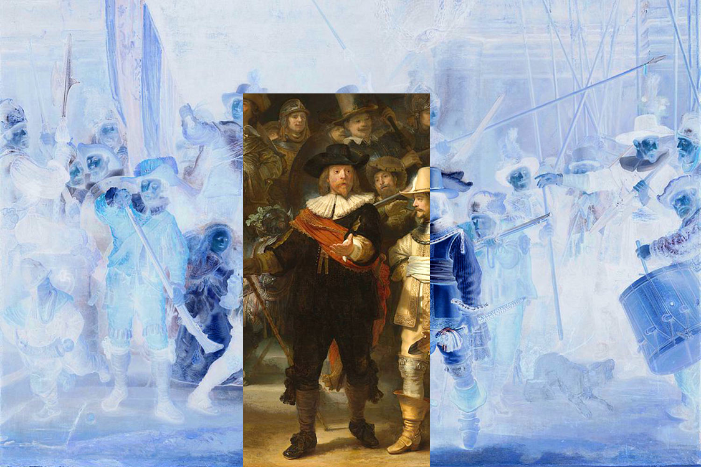

Input Size:
magick identify -ping -format '%w %h' nightwatch.jpg
1500 x 1000
| Value | x/width | y/height |
| Input Size (px) | 1500 | 1000 |
| Output Size (px) | 300 | 600 |
| Focalpoint (factor) | 0.48 | 0.6 |
| Focalpoint Nearest (factor) | 0.48 | 0.4 |
| Scaling (factor) | 0.208333 | 0.75 |
| Scaling Max (factor) | 0.75 | 0.75 |
| IM Offset top/left (px) | 390 | 150 |
| CSS Offset (px) | 188 | 125 |
| CSS Offset before scaling (px) | -578 | -275 |
| CSS Offset after scaling (px) | -771 | -367 |

Imagemagick Hardcrop
magick nightwatch.jpg 75% -crop 300x600+390+150 nightwatch.out.png
CSS Softcrop per Matrix
transform: matrix(0.75, 0, 0, 0.75, -578, -275);
CSS Softcrop in Reihenfolge translate/scale
transform: translate(-578px, -275px) scale(0.75, 0.75);
CSS Softcrop in Reihenfolge scale/translate
transform: scale(0.75, 0.75) translate(-771px, -367px);